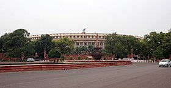

Парламент Індії |
Політика Індії проходить у рамках її Конституції. Індія є федеративною парламентською демократичною республікою, в якій президент Індії є главою держави, а прем'єр-міністр Індії є главою уряду. Індія дотримується подвійної політики, тобто подвійний уряд, який складається з центральної влади в центрі і держав на периферії. Конституція визначається організацією, повноваження та обмеження центральним урядом і урядами штатів, і це добре відбивається, жорсткою і вважається вищим, тобто закони країни повинні відповідати їй. Існує положення для двопалатного законодавчого органу , що складається з верхньої палати, в Раджья Сабха, який представляє державам Індійського Федерації, і нижньої палати , тобто Лок Сабха, який представляє народ Індії в цілому. Конституція Індії передбачає створення незалежної судової влади, яку очолює Верховний суд. Суд уповноважений захищати Конституцію, вирішувати спори між центральним урядом і Штатами, щоб врегулювати міждержавні спори, анулювати ні центральна, ні державні закони, що суперечать Конституції та захисту основних прав громадян, видача виконавчих листів на їх виконання у випадках порушення. |
Уряд формується на основі виборів, які проводяться кожні п'ять років (якщо не зазначено інше), сторони, заручаються більшістю голосів членів відповідних нижньої палати (Лок Сабха в центральної влади і Видхан Сабха в Штатах). Індія мала свої перші загальні вибори в 1951 році, в яких переміг Індійський національний конгрес Політична партія продовжувала домінувати в наступних виборах аж до 1977, коли на з'їзді було сформовано уряд вперше у незалежній Індії. У 1990-ті роки кінець однопартійного панування і підйом коаліційного уряду. На виборах по 16-й Лок Сабха, що проходила з квітня 2014 по травень 2014 року, знову повернув однопартійну систему в країну, з Бхаратія Джаната Парті будучи в змозі претендувати на більшість у Лок Сабхе. В останні десятиліття індійська політика стала династичною справою.[3] Можливими причинами цього може бути відсутність партійних організацій, незалежних організацій громадянського суспільства, які мобілізують на підтримку партій і централізованого фінансування виборів.[4] Цей економіст аналітичної групи за рейтингом Індії як "неповноцінна демократія" у 2016 році. | |